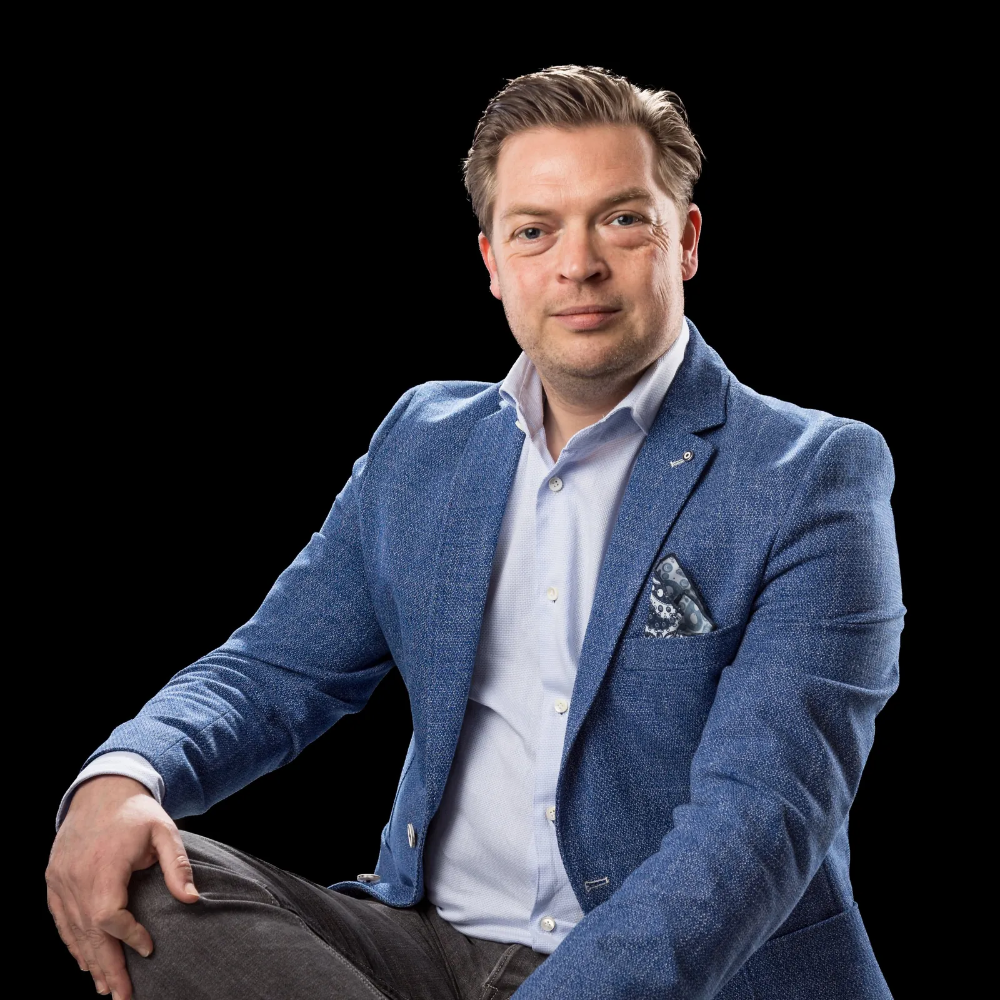

Meer commerciële slagkracht begint bij beter gedrag in gesprekken.
Salestraining die verder gaat dan technieken. VEMAT helpt verkopers, accountmanagers en salesmanagers om anders te handelen in klantgesprekken, en dat ook vol te houden.

Waar commerciële teams en organisaties mee zitten.
- Het commerciële team benut te weinig kansen.
- Accountmanagers willen meer waarde uit klantrelaties halen.
- Verkopers vinden complexe verkoopgesprekken lastig.
- Professionals willen sterker worden in onderhandelingen.
- Salesmanagers willen de prestaties van hun team verbeteren.
- De organisatie wil haar commerciële aanpak verder professionaliseren.
Zelden is kennis het probleem. Het gaat om gedrag: wat iemand doet op het moment dat het gesprek spannend of complex wordt. Daar werkt VEMAT aan.
Zes onderdelen, één richting: sterker commercieel gedrag.
Salestraining
Voor teams die hun verkoopaanpak willen aanscherpen. We oefenen met situaties uit uw eigen verkooppraktijk, van eerste contact tot afsluiting.
Gesprekstechnieken
Beter luisteren, scherper doorvragen en een gesprek naar een besluit brengen. Eerst begrijpen wat de klant bedoelt, dan pas reageren.
Onderhandelen
Voor professionals die in onderhandelingen zekerder willen staan. Voorbereiden, de eigen positie bepalen en overeind blijven onder druk.
Accountmanagement
Voor accountmanagers die meer uit bestaande klantrelaties willen halen: de relatie verdiepen, kansen signaleren en proactief handelen.
Consultative selling
Verkopen vanuit de vraag achter de vraag. Wie de situatie van de klant begrijpt, kan echt adviseren in plaats van alleen aanbieden.
Salesmanagement
Voor salesmanagers die hun team willen sturen, coachen en laten groeien. Aansturen op gedrag in plaats van alleen op cijfers.

Sales leer je door te doen. Daarom oefenen we veel.
Geen eindeloze PowerPoints, wel rollenspellen met situaties die deelnemers herkennen uit hun werk. Met persoonlijke feedback, zodat iedereen ervaart wat werkt en wat niet.
- Eerst begrijpen: wat speelt er in uw team en uw markt?
- Inzicht in eigen gedrag, soms met een assessment
- Veel oefenen met herkenbare verkoopsituaties en feedback
- Betrokken management, zodat het nieuwe gedrag blijft hangen
Wat commerciële ontwikkeling moet opleveren.
- Meer commerciële slagkracht
- Betere gesprekken met klanten
- Effectiever accountmanagement
- Sterker commercieel gedrag, ook als het druk is
“Energiek, to-the-point en precies wat ons team nodig had.”
Table du Sud over de salestraining. Lees het verhaal.
Ook leidinggevenden ontwikkelen?
Bespreek uw commerciële uitdaging.
Een kort, persoonlijk gesprek met Frank. U vertelt waar het team tegenaan loopt, hij denkt mee over wat er nodig is.